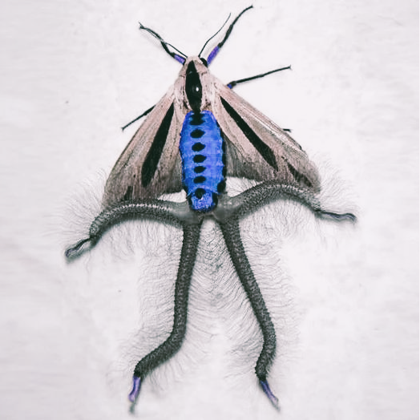

APP-724 is to be kept in High Security Holding Cell in Site-86. Its room shall be covered with Musou Black paint, and it shall not recieve any light under any circumstance, only observed through infrared vision.
Should it come into contact with any form of light, a Hades-Level Lockdown of Site-86 shall commence until APP-724 is secured in its cell.
Should it come into contact with natural sunlight, a Thanatos-Level End-of-Humanity event will be declared and Personnel should follow procedure to prolong the life of any human or anomaly in the vicinity as much as possible.
Retrieval:
It was procured in ████████, Japan in a dark apartment filled with similarly caged insects, none of which were anomalous, except the center piece of the collection, now known as APP-724.
The cage it resided in was covered with a Vantablack cloth with a sticky note attached reading (after translation): "Keep away from light sources".
SF Personnel responsible for retrieval did not heed the warning and lifted the veil to observe and describe APP-724, allowing his flashlight to reach it.
Approximately five seconds after, a localised low-yield explosion occured within SF Personnel's flashlight akin to a neutron bomb, killing him and severly injuring other SF Personnel in the vicinity.
Entity Description:

APP-724 (Artist rendering based on description)
APP-724 is a male baphomet moth (Creatonotos gangis) of average size; 4cm in length (9cm with enlarged coremata).
The only feature of note is its unusual colour, appearing a vibrant deep blue.
When exposed to light of any kind, its coremata enlarge, and electricity begins arcing between them five times.
This warns any bystander of a five second timer until a neutron bomb-like explosion occurs within the light source, proportional to its size.
This anomalous attribute could lead to catastrophic, world-ending results should it encounter a light source at least ██ km in diameter.
As such, it has been designated Pericolo, and no experiment or test will be allowed without Level-Ω Clearance from at least 10 Level-ο Personnel.